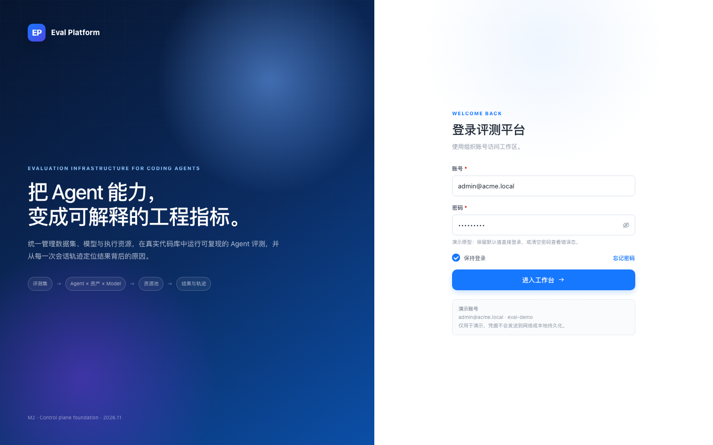
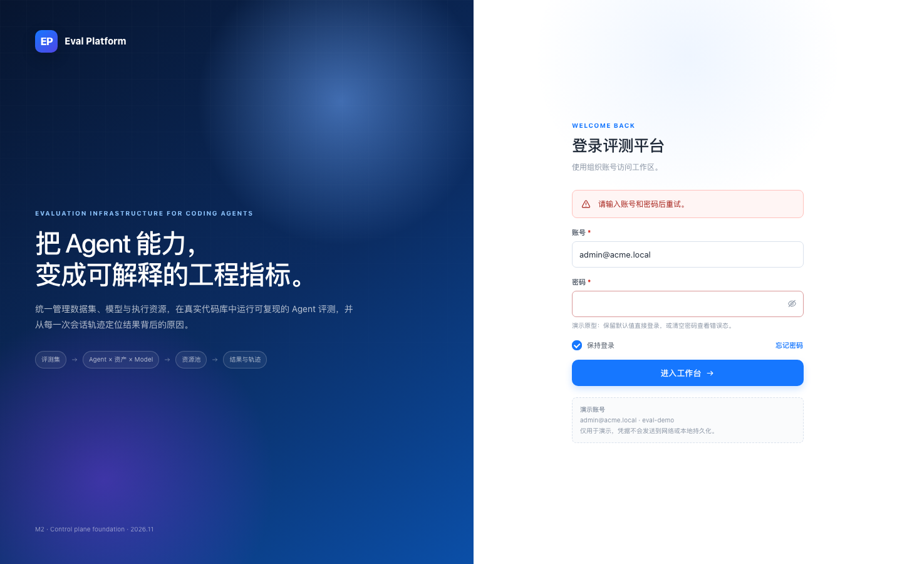
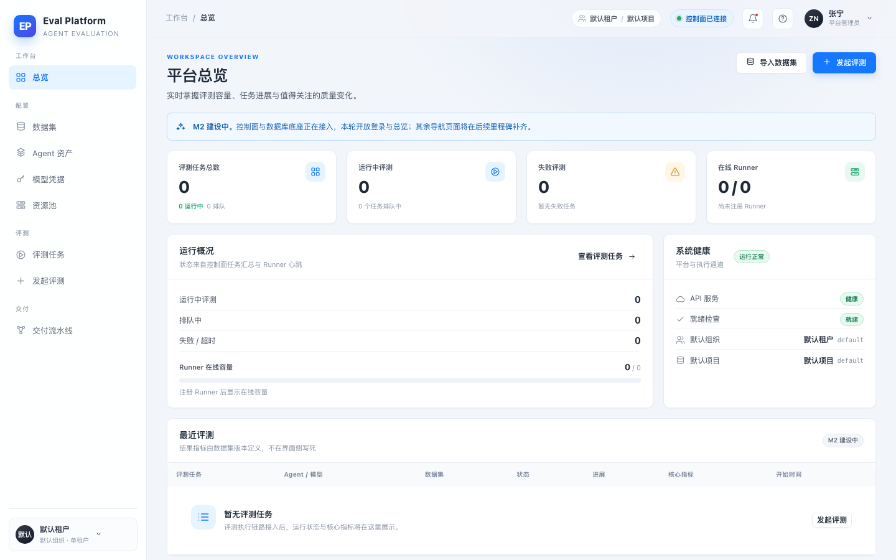
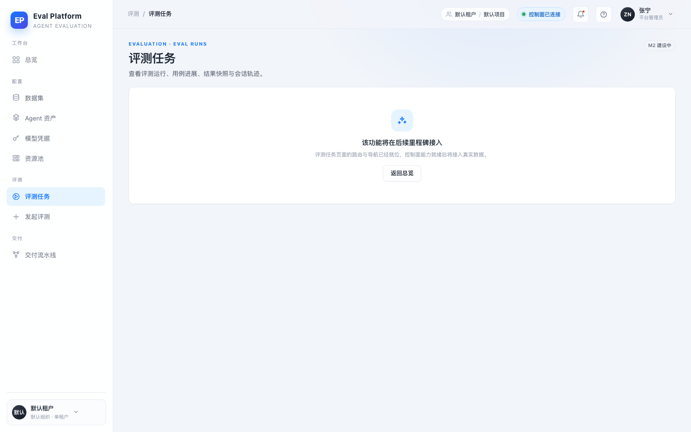
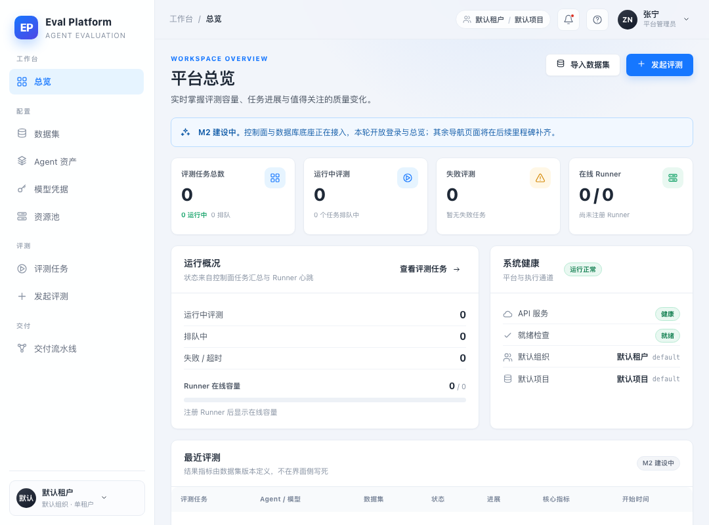
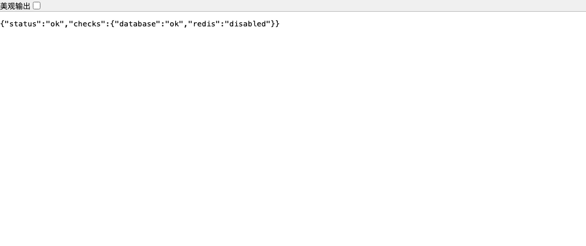

- PR
- #19
- Branch
- agent/m2-01-control-plane-foundation
- Commit
- 5c931cc
- Web
- http://127.0.0.1:4173 (vite preview)
- API
- http://127.0.0.1:8000 (uvicorn + PostgreSQL 16)
- Database
- eval @ local PostgreSQL, migration 1a795994c4e9
Computer Use Smoke · M2-01
M2-01 控制面与数据库底座 · 浏览器 Smoke
在真实 uvicorn + PostgreSQL 与构建后的 Web 预览上完成 6 项浏览器 smoke：登录、空密码错误态、真实总览、占位路由、控制面健康、1080×800 桌面最小宽度全部通过；最终复跑无 console error 与 page error。
6/6场景通过
0Console errors
0Page errors
2视口
Environment and Artifact
2026-11-08 · macOS · Chrome headless 1440×900 / 1080×800Scenario Matrix
6 pass| # | 场景 | 结果 | 细节 | 证据 |
|---|---|---|---|---|
| 01 | 登录页渲染 | PASS | 主视觉、账号/密码字段、演示账号说明可见；默认值预填。 | 01-login.png |
| 02 | 空密码校验 | PASS | 清空密码提交后出现内联错误“请输入账号和密码后重试”，未导航。 | 02-login-error.png |
| 03 | 登录后总览 | PASS | 演示登录进入 /overview；默认租户/项目、系统健康与空态表来自真实 API。 | 03-overview.png |
| 04 | 占位路由 | PASS | /evals 在应用壳内显示“该功能将在后续里程碑接入”占位说明。 | 04-evals-placeholder.png |
| 05 | 控制面健康 | PASS | 经 Web 代理访问 /healthz 与 /readyz：healthz=ok, readyz=ok, database=ok。 | 06-readyz.png |
| 06 | 桌面最小宽度 | PASS | 1080×800 下侧栏、状态卡、运行概况与空态表仍完整可用。 | 05-overview-1080.png |
Issues and Observations
P3 首次运行时浏览器请求 /favicon.ico 返回 404首次运行时浏览器请求 /favicon.ico 返回 404
- Actual
- Console 出现一条 404 Failed to load resource
- Expected
- 页面加载无资源 404
- Root cause
- index.html 未声明 favicon
- Fix
- 新增 web/public/favicon.svg 并在 index.html 声明
Fixed · 5c931cc
Evidence
6 screenshots





Automated Coverage Assessment
4 areas reviewed| 区域 | 覆盖 | 结论 | 建议 |
|---|---|---|---|
Conclusion
浏览器 smoke 通过，保留部署前门禁6/6 场景通过，最终复跑 console/page error 均为 0；唯一发现（favicon 404）已修复。
- Compose 实际启动仍需在 M2-02 的 CI/部署机验证。
- PR #19 需人工加入 M2 Project 才能通过 flow-online。
Generated by dsh-superagent · computer-use-smoke-reporting · 2026-11-08